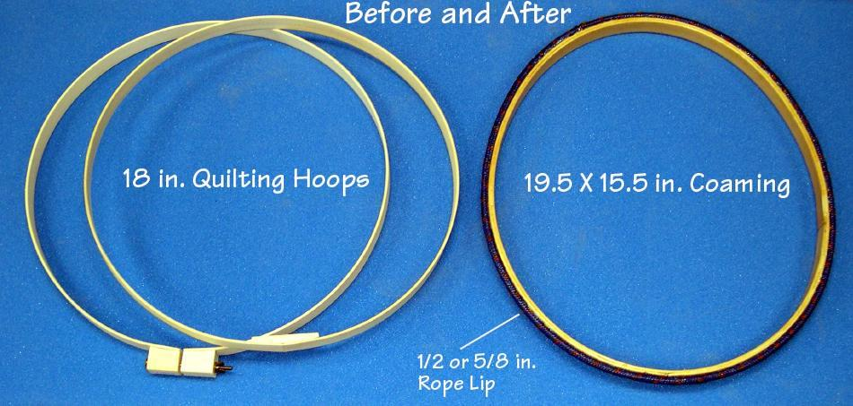

| Wood / Freestanding Coaming (1 of 8) | Menu Last Page Next Page |
|
 A lightweight and easily constructed coaming can be made by using an 18" quilting hoop. Quilting hoops come in two sections, an outer and slightly smaller inner hoop. The outer hoop has an adjustment bolt that tightens it down onto the inner hoop. The two hoops are glued together with Epoxy, and a rope is used to shape the hoops into the desired configuration while the epoxy cures. A woven polyester rope lip is then attached. The entire structure, including the rope, is coated with two coats of epoxy and a final coat or two of Urethane. The next several pages describe the construction process. This coaming is attached with Velcro to the skin and is freestanding unlike the bolted on HDPE and fiberglass coamings already described. It's smaller size requires the fabrication of a new forward support cross section ( Section 4 on most boats in this manual). Offsets will be provided upon request for the Sea _____ series of boats. |
|